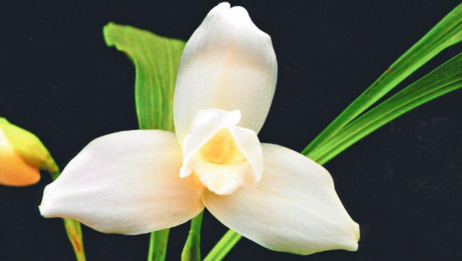
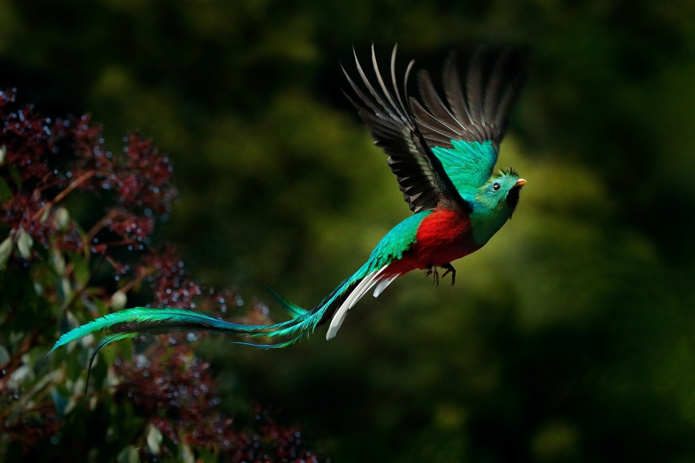

Simbolos Patrios
Bandera y Escudo

La primera bandera fue creada por el gobierno conservador del general Rafael Carrera y Turcios. Se basó en la propuesta del obispo Juan José de Aycinena y Piñol y otros miembros del Clan Aycinena. Quienes querían enfatizar la influencia conservadora en Guatemala manteniendo elementos españoles. Entre 1860 y 1865 tras la muerte de Carrera y de los principales miembros del clan Aycinena, la influencia conservadora se debilitó en Guatemala. Después de la Revolución Liberal del 30 de junio de 1871 dirigida por Miguel García Granados y Justo Rufino Barrios, decretaron la modificación de la Bandera de Guatemala, con el objetivo de eliminar las referencias conservadoras. El 17 de agosto de 1871 el Presidente de la República, el general Miguel García Granados, hizo un Decreto Ejecutivo No.12 creando la actual bandera.
Arbol Nacional

La fronda de la Ceiba puede tener hasta 1600 metros cuadrados, además es reconocida por su hermoso follaje y excelentes propiedades medicinales. Puede medir más de 50 metros de altura, según el biólogo e investigador Luis Villar Anleu, se necesitan unas seis personas tomadas de la mano para rodear el árbol. Para los mayas, la Ceiba representaba la comunicación de los humanos con el cielo y el inframundo, es también considerada el árbol de la vida, árbol sagrado, cuna de Xibalbá, infierno de los mayas y árbol sabio.
Flor Nacional
Es una de las 35,000 especies de orquídeas que existen, conocida por su nombre científico Lycaste skinneri o Lycaste virginalis, esta habita en el sur de México, Guatemala, El Salvador y Honduras, a una altitud promedio de 1650 msnm. Pueden variar de color, que van desde completamente blancas en la variedad alba, pasando por diferentes tonos de rosado hasta lavanda, esta pureza en el color las convierte en el mejor candidato como punto de partida para la formación de híbridos de Lycaste.
Ave Nacional
Este era considerado por las civilizaciones precolombinas de Mesoamérica como un ave divina asociada a Quetzalcóatl, la “serpiente emplumada”. Los antiguos mexicas y mayas vieron al quetzal como el “dios del aire” y como un símbolo de la bondad y la luz, sus plumas de cola verde fueron veneradas como símbolos para el crecimiento de las plantas en la primavera.